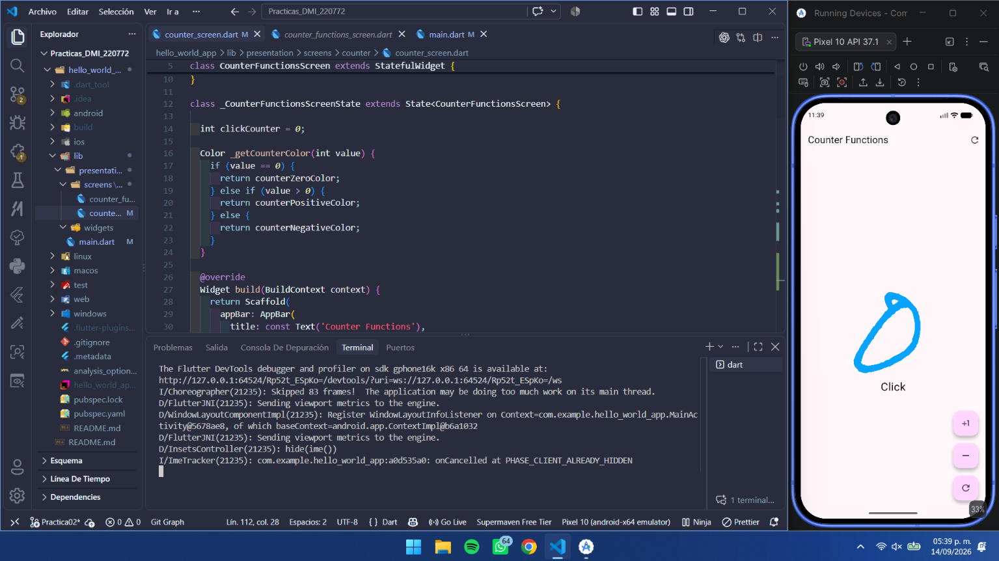
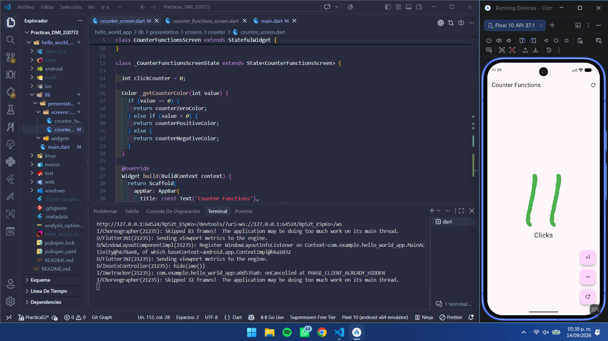
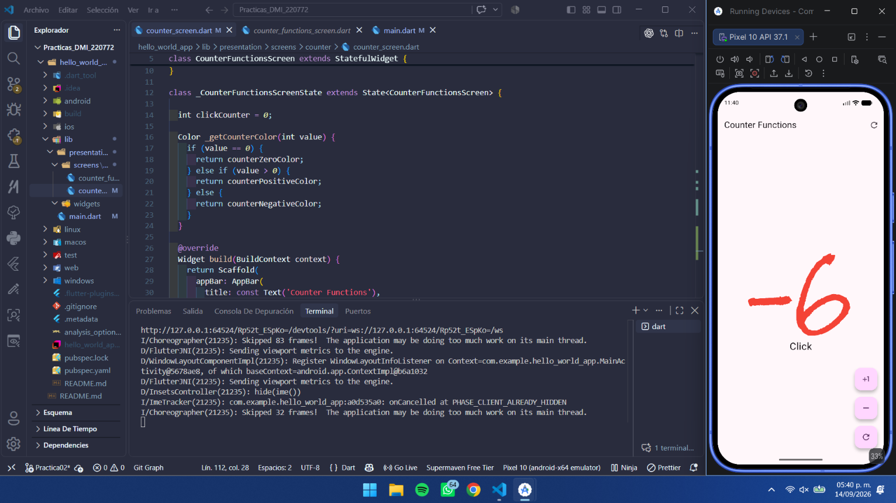

📋 Prácticas de la Asignatura
Mi Primer Aplicación Móvil con Flutter (Contador Funcional)
A continuación se presenta el diagramador interactivo en tiempo real en formato **Archify** generado para la arquitectura del módulo hello_world_app.
1. Estado Cero / Neutral (0)

El valor del contador inicia en 0 y se renderiza con el color azul dinámico counterZeroColor.
2. Estado Positivo (>0)

Al presionar el botón +1, el contador aumenta y cambia automáticamente a verde counterPositiveColor.
3. Estado Negativo (<0)

Al presionar el botón -1, el valor es menor a 0 y cambia a rojo counterNegativeColor.
Haz clic en cualquier archivo del proyecto para inspeccionar su código fuente directo:
Objetivo Alcanzado:
Aprender la estructura de proyectos móviles en Flutter, implementación de widgets Stateless/Stateful, control de flujo con setState() y evaluación funcional de temas de color.
Conceptos Clave Aprendidos:
- StatefulWidget: Permite modificar el estado interno y re-renderizar componentes dinámicos.
- CustomButton: Extracción y encapsulamiento de componentes reusables de UI.
- GoogleFonts: Integración de recursos tipográficos externos en Flutter.
- Hot Reload & Compilation: Flujo de desarrollo ágil en Flutter SDK.